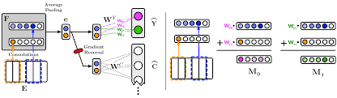

Interpretable Neural Architectures for Attributing an Ad’s Performance to its Writing Style
1 Introduction
A text’s style can affect our cognitive responses and attitudes, thereby influencing behavior (Spence, 1983; Van Laer et al., 2013). The predictive relationship between language and behavior has been well studied in applications of NLP to ∗This work was conducted while the first author was doing internship at Google. 1Our code is available at github.com/rpryzant/ deconfounded_lexicon_induction/tree/ master/text-performance-attribution tasks like linking text to sales figures (Ho and Wu, 1999; Pryzant et al., 2017) and voter preference (Luntz, 2007; Ansolabehere and Iyengar, 1995). In this paper, we are interested in interpreting rather than predicting the relationship between language and behavior. We focus on a specific instance: the relationship between the way a search advertisement is written and internet user behavior as measured by click through rate (CTR). In this study CTR is the ratio of clicks to impressions over a 90-day period, i.e. the probability of a click, given the person saw the ad. Our goal is to develop a method for performance attribution in textual advertisements: identifying lexical features (words, phrases, etc.) to which we can attribute the success (or failure) of a search ad, regardless of who created the advertisement or what it is selling. Identifying linguistic features that are associated with various outcomes is a common activity among machine learning scientists and practitioners. Indeed, it is essential for developing transparent and interpretable machine learning NLP models (Yamamoto, 2012). However, the various forms of regression and association quantifiers like mutual information or log-odds ratio that are the de-facto standard for feature weighting and text attribution all have known drawbacks, largely related to problems of multicollinearity (Imai and Kim, 2016; Gelman and Loken, 2014; Wurm and Fisicaro, 2014; Estevez et al. ´ , 2009; Szumilas, 2010). Furthermore, these prior methods of text attribution critically fail to disentangle the explanatory power of the text from that of confounding information which could also explain the outcome. For example, in movie reviews, the actors who star in a film are the most powerful predictors of box of- fice success (Joshi et al., 2010). However, these are words that the film’s marketers can’t change. Likewise, the name of a well-known brand in an ad for shoes might boost its effectiveness, but if we attribute the ad’s success to the brand terms, we are actually crediting the power of the brand, not necessarily an actionable writing strategy (Ghose and Sundararajan, 2006). There is an emerging line of work on text understanding for confound-controlled settings (Johansson et al., 2016; Egami et al., 2017; Pryzant et al., 2018; Li et al., 2018), but these methods are usually concerned with making causal inferences using text. They are limited to word-features and can only tell you whether a word is discriminative. Attribution involves the more fine-grained problem of identifying discriminative subsequences of the text and being able to explain which level of the outcome these subsequences support. We present a pair of new algorithms for solving this problem. Based on the Adversarial and Residualizing models of (Pryzant et al., 2018), these algorithms first train a machine learning model and then analyze the trained parameters on strategically chosen inputs to infer the most important features for each output class. Our first algorithm encodes the text with a convolutional neural network (CNN) and proceeds to predict the outcome and adversarially predict the confounders. We select attributional n-grams by projecting back the weights of the output layer onto the encoder’s convolutional feature maps. Our second algorithm uses a bag-of-words text representation and is trained to learn the part of the text’s effect that the confounds cannot explain. We get n-grams from this method by tracing back the contribution of each feature towards each outcome class. We demonstrate these algorithms’ efficacy by conducting attribution studies on high- and lowperforming search advertisements across three domains: real estate, job listings, and apparel. We find the proposed algorithms lend importance to words that are more predictive and less confoundrelated than a variety of strong baselines.
2 Text Attribution
We begin by proposing a methodological framework for text attribution and formalizing the activity into a concrete task.
3 Proposed Algorithms
We continue by describing the pair of novel algorithms we are proposing to use for text attribution. Each algorithm consists of two phases: training, where we use T, Y , and C to train a machine learning model, and interpretation, where we analyze the learned parameters to identify attributional language.
3.1 Convolutional Adversarial Selector (CA) Training.
We begin by observing that the language we want to attribute should be able to explain the variation in Y and should also be decorrelated from the confounders C. This implies that the features we want to select should be predictive of Y , but not C (e.g. brand name). The Convolutional Adversarial Selector (CA) draws inspiration from this. It adversarially learns encodings of T which are useful for predicting Y but are not useful for predicting C. The model is depicted on the left-hand side of Figure 1. First, we encode T into e ∈ Rf with the following steps:
- 
figure 2: Interpretation. Once we’ve trained a CA model, we interpret its behavior in order to determine the most important n-grams for each level of the outcome. 💬
4 Experiments
We demonstrate the efficacy of the proposed algorithms on a dataset of internet advertisements.
(Ansolabehere & Iyengar, 1995)(Baayen, Kuperman, & Bertram, 2010)
References
- Ansolabehere, S., & Iyengar, S. (Eds.). (1995). Going Negative: How Attack Ads Shrinks and Polarize the Electorate. New York: Free Press.
- Baayen, R. H., Kuperman, V., & Bertram, R. (Eds.). (2010). Frequency effects in compound processing.